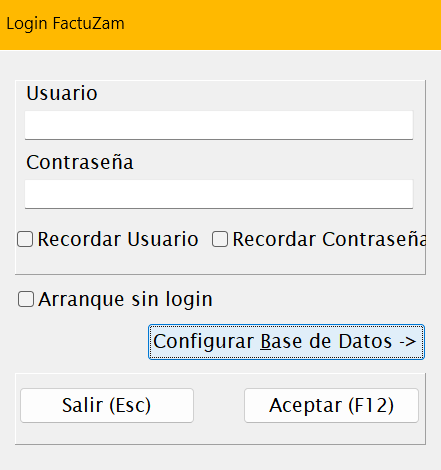
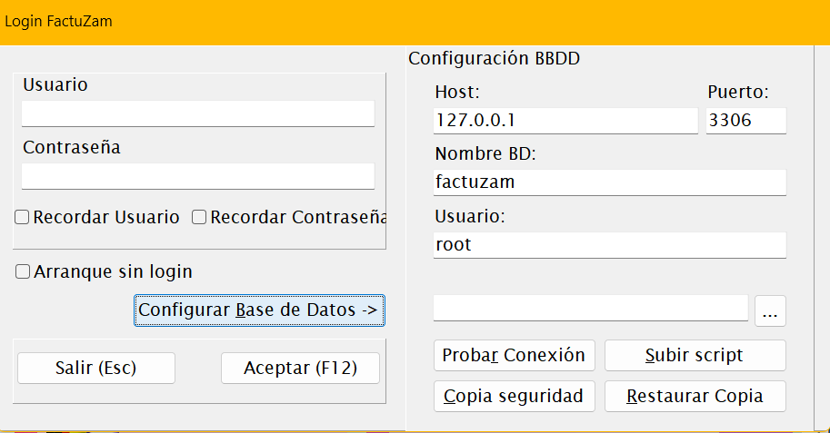
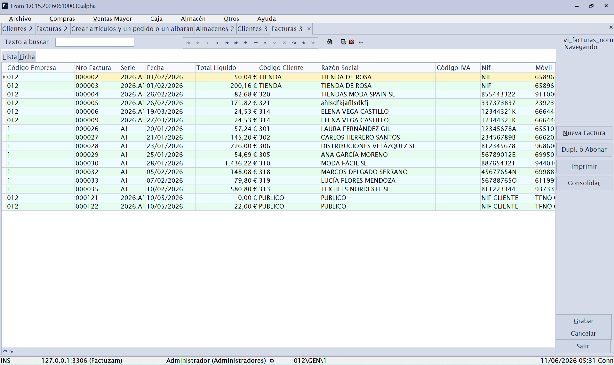

00 · Acceso y primeros pasos
Este capítulo describe lo que ocurre desde que arrancas Factuzam hasta que tienes la ventana principal lista para trabajar.
Práctica en programa DEMO: en la primera entrada, usa el usuario administrador de la demo solo para crear tu usuario propio con contraseña en Otros ▸ Usuarios, Grupos y Perfiles. Asígnalo al grupo Administradores y después entra de nuevo desde Archivo ▸ Invocar login para continuar las pruebas con tu usuario.
1. Pantalla de presentación (Splash)
Al ejecutar la aplicación se muestra durante unos segundos la pantalla de presentación con el logotipo y el número de versión. Es informativa; no requiere ninguna acción. La misma pantalla puede consultarse en cualquier momento desde Ayuda ▸ Acerca de.
2. Inicio de sesión (Login)
A continuación aparece la ventana Login FactuZam:

| Campo | Descripción |
|---|---|
| Usuario | Nombre de usuario de la aplicación. |
| Contraseña | Clave del usuario. |
| Recordar Usuario | Guarda el usuario para el próximo arranque. |
| Recordar Contraseña | Guarda también la contraseña (úsalo solo en equipos de confianza). |
| Arranque sin login | Si se marca, la aplicación entra directamente la próxima vez sin pedir credenciales. |
Si hay un cambio de usuario dentro de la misma sesión, en la aplicación se
puede invocar desde Archivo ▸ Invocar login o desde la combinación de
teclas [Ctrl]+[Mayúsculas]+[L].
Botones:
- Aceptar (F12) — valida las credenciales y entra a la aplicación.
- Salir (Esc) — cierra la aplicación sin entrar.
El usuario determina tu perfil de permisos, que decide qué menús y qué acciones tienes disponibles dentro de la aplicación.
3. Configuración de la base de datos
Desde la propia ventana de login, el botón Configurar Base de Datos ▸ despliega el panel Configuración BBDD. Aquí se indican los datos de conexión al servidor MariaDB/MySQL donde residen los datos:

| Campo | Descripción |
|---|---|
| Host | Servidor donde está la base de datos (p. ej. localhost o una IP). |
| Puerto | Puerto del servidor (MariaDB usa 3306 por defecto). |
| Nombre BD | Nombre de la base de datos de Factuzam. |
| Usuario | Usuario de la base de datos. |
| Contraseña | Clave del usuario de la base de datos. |
Botones del panel:
- Probar Conexión — comprueba que los datos son correctos y que el servidor responde, sin necesidad de entrar.
- Configurar/cambiar credenciales del servidor (
...) — utilidades avanzadas de administración de la conexión.
Esta configuración normalmente la realiza una sola vez el instalador o administrador. Un usuario habitual no necesita tocarla. Si al arrancar aparece un error de conexión, avisa al administrador antes de cambiar nada aquí.
4. La ventana principal
Tras validar el login se muestra la ventana principal de Factuzam, con:

- La barra de menú en la parte superior (Archivo, Compras, Ventas Mayor, Caja, Almacén, Otros, Verifactu, Ayuda). Es el eje de navegación de toda la aplicación y la estructura que sigue este manual.
- Un área de trabajo con pestañas: cada opción de menú que abres se carga como una pestaña dentro de la ventana principal, de modo que puedes tener varias pantallas abiertas a la vez y cambiar entre ellas con la combinación de teclas Control + Tab.
- Una barra de estado inferior con información de contexto (usuario, empresa activa, versión…).
Cómo se abren las pantallas
Cuando eliges una opción de menú, la aplicación abre la pantalla de mantenimiento correspondiente como una pestaña nueva (o reutiliza la que ya esté abierta). Algunas pantallas admiten varias instancias simultáneas (verás un número junto al título, p. ej. Clientes 2).
El funcionamiento interno de cada pantalla (lista, ficha, búsqueda, navegación, grabado…) es común a casi todos los mantenimientos y se explica una sola vez en el capítulo 01 · Conceptos comunes. Conviene leerlo antes de los capítulos de cada menú.
5. Práctica en programa DEMO: datos básicos
Después de entrar con tu usuario propio, usa la demo para preparar un entorno mínimo de pruebas. La idea es crear pocos registros, pero bien relacionados, para poder comprar, vender y revisar stock sin depender de datos reales.
En la demo puedes probar sin miedo, pero conviene seguir este orden: primero datos de administración, después catálogos de tallas/colores y, al final, artículos y documentos.
5.1 Empresas, documentos y formas de pago
- Abre Archivo ▸ Empresas y crea o revisa una empresa de prueba. Rellena los datos fiscales básicos y entra en la sub-pestaña Series para definir las series de facturación que usarán los documentos.
- Abre Otros ▸ Impuesto IVA y Otros ▸ Grupos de IVA. En una demo normalmente basta con revisar los tipos existentes antes de tocar nada.
- Abre Otros ▸ Contadores y comprueba la numeración inicial de facturas, albaranes, pedidos y otros documentos por empresa y serie.
- Abre Otros ▸ Formas de pago documentos y crea las formas habituales para compras y ventas mayor: contado, transferencia, giro, etc.
- Si más adelante se va a probar el TPV, deja previstas también las formas de cobro de caja: efectivo, tarjeta, vale o las que necesites.
5.2 Almacenes y cajas de venta
- Abre Archivo ▸ Almacenes y crea al menos un almacén de venta. Rellena su nombre, dirección si procede y los usos del almacén.
- En la sub-pestaña Cajas de Venta, crea las cajas físicas asociadas a ese almacén. Cada caja representa un puesto, mostrador o terminal de venta dentro del almacén.
- Si hay varios puestos de cobro, crea una caja por puesto para poder separar después las operaciones, arqueos y movimientos de efectivo.
- En una práctica sencilla basta con un almacén de venta y una caja de venta activa.
5.3 Tallas, colores, temporadas y tarifas
- Abre Archivo ▸ Tablas Auxiliares ▸ Atributos básicos y da de alta los valores elementales que vas a usar: tallas, colores y equivalencias normalizadas.
- Abre Archivo ▸ Tablas Auxiliares ▸ Tipos de Variaciones y crea los ejes Talla y Color. En cada uno, añade sus atributos: S, M, L, XL, 38, 40, rojo, azul, negro, etc.
- Abre Archivo ▸ Tablas Auxiliares ▸ Colecciones de Atributos y prepara los sistemas de tallas reutilizables, por ejemplo Mujer S-XL, Calzado 36-41 o Niño 2-16. Así podrás aplicarlos a varios artículos sin repetir la misma curva.
- Abre Archivo ▸ Tablas Auxiliares ▸ Propiedades y crea la propiedad Temporada con valores como Primavera-Verano, Otoño-Invierno o el año/campaña que uses en la prueba.
- Abre Archivo ▸ Tablas Auxiliares ▸ Tarifas y crea una tarifa de venta de prueba. Más adelante, al crear artículos o sesiones de compra, asignarás precios a esa tarifa.
5.4 Artículos de prueba y primer circuito
- Abre Archivo ▸ Artículos y crea un artículo sencillo: descripción, familia, unidad de medida, IVA y tarifa.
- En la ficha del artículo, usa las variaciones y colecciones para generar sus SKUs de talla/color. Cada SKU representa una combinación vendible y con stock propio.
- Para probar una entrada real de género, abre Compras ▸ Sesiones. Ahí puedes crear artículos con colores y tallas, repartir unidades por talla y generar el pedido o albarán de compra.
- Comprueba el resultado en Almacén ▸ Informes o en la consulta de stock del artículo. Con esto quedan preparados los datos básicos para probar después compras, ventas o movimientos.
Cuando termines esta práctica, tendrás creados los datos básicos mínimos: empresa, documentos, almacén, caja, tallas, colores, sistemas de tallas, temporadas, tarifas y artículos de prueba.